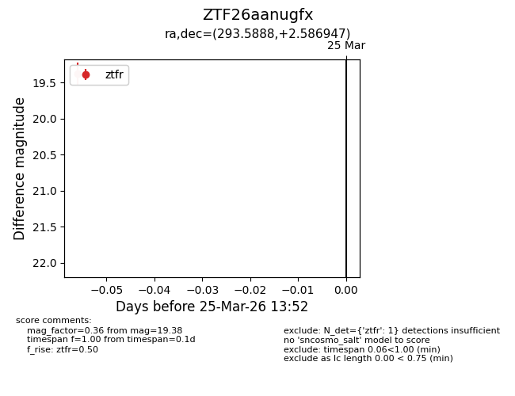
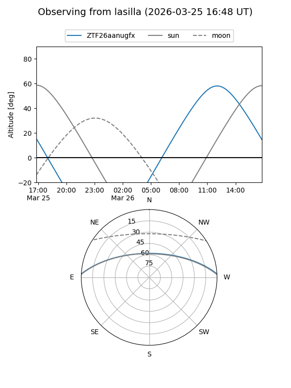
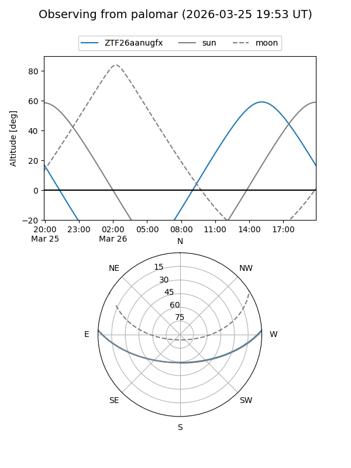

ZTF26aanugfx
Target ZTF26aanugfx at 2026-03-25 13:55
Aliases and brokers:
FINK: link
Lasair: link
ALeRCE: link
alt names
ZTF26aanugfx (ztf,fink_ztf)
Coordinates:
equatorial (ra, dec) = 293.5888,+2.58695
equatorial (HMS+DMS) = 19:34:21.31,+02:35:13.01
galactic (l, b) = (40.1882,-8.33372)
Flags:
Photometry:
last ztfr=19.38
1 ztfr detections
Lightcurve

Visibility


Additional plots